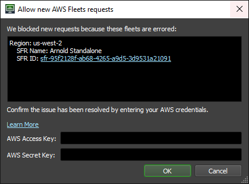

Troubleshooting¶
Instances Shutting Down¶
If some of your instances are shutting down, first check the status of the Resource Tracker. It can be found in the status label at the bottom right corner of the Deadline Monitor.
Healthy: This likely means that your instance was terminated by EC2. The can be caused by Spot Pricing changes.
Warning: Occasionally, individual instances won’t be performing correctly. If set to maintain the Spot Fleet Request should start new instances to replace the instances that were terminated. These new instances might also have trouble connecting to your repository. In that case, you may have saturated the network, or reached the capacity of your repository share. Try lowering the number of instances you have running or selecting a better instance type for upgraded network performance.
Error: Greater than 35% of your instances have failed. Check your connection to EC2, make sure that it’s working with all AWS Regions and Availability Zones that you’re using. For AWS Portal this includes AWS Portal Link. Check your connection to the repository. Check to see if the RCS is functioning correctly or that your network share is functioning properly.
Unable to Start New Instances¶
If you’re unable to start new Spot Fleet Requests, that means that your Resource Tracker is reporting in the “Error” state. Once you’ve resolved the cause of the error, you need to manually reset the Resource Tracker.
Double-click on the status label in the bottom right corner of the Deadline Monitor. Here you can see the various fleets that have reported to be in the “Error” state. To reset your system, enter your AWS Access Key and AWS Secret Key and click OK.
Finding Logs on Terminated Fleets¶
When trying to determine why the Resource Tracker is terminating your Fleets it can be helpful to look at the “DeadlineResourceTracker-ResourceTrackerLogger” logs in CloudWatch. These can be found by going through the following steps:
These can be found by logging into your AWS Console and navigating to the CloudWatch service page.
Then select Logs in the column on the left to open your CloudWatch Logs page.
Click on the CloudWatch Log Group /aws/lambda/DeadlineResourceTracker-ResourceTrackerLogger.
Click on the CloudWatch Log Stream that has a Last Event Time around the time of the incident.
All logs within that stream will be displayed.
The CloudWatch Logs are created when:
A render node fails to report to the Resource Tracker SQS Queue.
A render node is marked as Unhealthy by the Resource Tracker.
A Fleet’s health status changes. (i.e. Healthy -> Unhealthy-Grace Period, Unhealthy-Grace Period -> Healthy, Unhealthy-Grace Period -> Unhealthy-Fleet Terminated)

{kind=link}
{kind=link}
{kind=link}
{kind=link}
{kind=link}